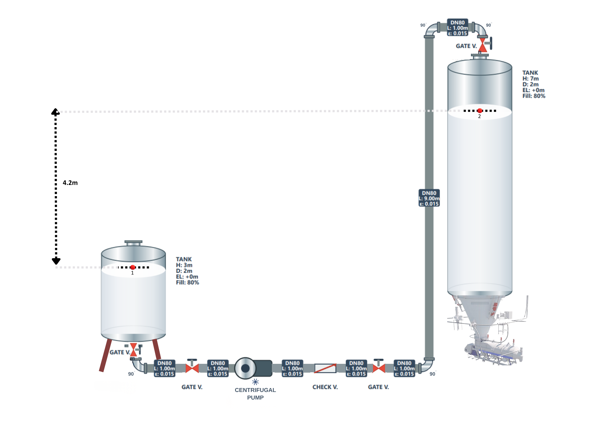

A 25 m³/h sanitary stainless steel pipeline transferring pasteurized milk from a balance tank to an elevated spray dryer feed tank.

In this project, an optimum piping system was designed to transfer pasteurized milk from a balance tank to a spray dryer feed tank located on an upper platform in a dairy processing plant. The system was required to operate continuously at a constant volumetric flow rate of 25 m³/h. The design was carried out using the mechanical energy balance approach.
A sanitary stainless steel pipeline (SS304, DN80) was selected to ensure hygienic operation and compatibility with dairy processing requirements. The total piping layout includes three isolation valves and one check valve to provide operational safety, backflow prevention, and suitability for cleaning-in-place (CIP) processes. In addition, a combination of 90° and 45° elbows was used to optimize flow behavior and minimize energy losses.
Based on the design calculations, the flow velocity of milk was determined to be within the acceptable range for dairy applications. The total dynamic head required to overcome elevation and frictional losses was estimated, and a centrifugal pump was selected accordingly. Assuming a typical pump efficiency of 70%, the required pump power was calculated to be within an acceptable industrial range.
Overall, the designed piping system provides a reliable, hygienic, and energy-efficient solution for continuous milk transfer to the spray dryer feed tank, meeting both process and industrial design requirements.
The equipment used in this milk transfer system includes tanks, pipes, valves, elbows, and a pump. Each component plays a critical role in ensuring safe, efficient, and hygienic operation. The selection was made based on fluid properties, process requirements, and industrial dairy standards.
The balance tank is a hygienic stainless-steel vessel used to temporarily hold pasteurized milk before it is pumped to the next processing unit. Its main function is to provide a continuous and stable milk supply to the downstream equipment and to maintain a nearly constant liquid level, which helps ensure steady flow conditions in the process line.
Stainless steel is the standard construction material in dairy applications due to its corrosion resistance, cleanability, and suitability as a food-contact surface. In this project, the balance tank serves as the initial holding vessel for pasteurized milk before the centrifugal pump and was considered an atmospheric tank in the mechanical energy balance — an appropriate starting point for the hydraulic design.
The spray dryer feed tank is a hygienic stainless-steel vessel used to receive pasteurized milk from the piping system and provide a continuous and controlled feed to the spray drying unit. It acts as an intermediate storage and regulation unit before the drying process, ensuring a stable flow rate and uniform feed conditions.
For efficient drying, the feed must be delivered at a constant flow rate and with uniform properties. The spray dryer feed tank plays a critical role in maintaining these conditions by acting as a buffer between the transfer line and the spray dryer — preventing flow fluctuations and ensuring consistent atomization performance during drying.
Gate valves are used as isolation valves in piping systems to start or stop fluid flow. Their primary function is not to regulate flow, but to provide a fully open or fully closed condition. In the fully open position, gate valves offer very low resistance to flow, minimizing pressure losses.
In this design, four gate valves were used in the fully open position to isolate different sections of the system — at pump suction, pump discharge, and tank connections. Their purpose is to allow safe maintenance, cleaning operations, and system control without interrupting the entire process.
A check valve is a type of automatic valve that allows fluid to flow in only one direction and prevents reverse flow. It operates without external control and plays a critical role in protecting equipment and maintaining process safety. The swing check valve consists of a hinged disc that swings open in the direction of flow and closes automatically when reverse flow occurs.
In this milk transfer system, the swing check valve is installed in the discharge line before the vertical section of the pipe. Since the fluid is transported to an elevated tank, there is a risk that the liquid may flow backward due to gravity when the pump stops. The check valve prevents this reverse flow, protecting the centrifugal pump from potential damage.
Elbows are pipe fittings used to change the direction of fluid flow within a piping system. 90° elbows are the most commonly used fittings, allowing flow redirection at a right angle. They are essential components in piping design when space constraints or equipment layout require sudden changes in flow direction. Due to the abrupt change in flow direction, 90° elbows create turbulence and contribute to energy losses — classified as minor losses.
The head loss associated with elbows is typically expressed using a loss coefficient (K value), which depends on the geometry and flow conditions. For standard 90° elbows, K generally ranges between 0.75 and 1.5. These losses were accounted for in the mechanical energy balance. Four 90° elbows were used to direct the milk flow along the required pipeline layout from the balance tank to the spray dryer feed tank.
Pipes are the main components of any fluid transport system, serving as the medium through which fluids are conveyed between process units. Proper pipe selection is essential to ensure efficient flow, minimal pressure losses, and compliance with hygienic standards.
In this design, a stainless steel pipe (SS304, DN80) with a total length of 15 m was selected to transport pasteurized milk from the balance tank to the spray dryer feed tank. SS304 is one of the most commonly used stainless steel grades in food processing applications — it offers good resistance to oxidation and cleaning chemicals, making it highly suitable for systems that require frequent CIP operations. Its smooth surface results in low roughness, which reduces friction losses and improves flow efficiency.
The pipe diameter (DN80) was selected to ensure flow velocity within the recommended range for dairy fluids (typically 1–3 m/s). Maintaining this range is important to avoid excessive pressure losses while also preventing sedimentation or flow instability.